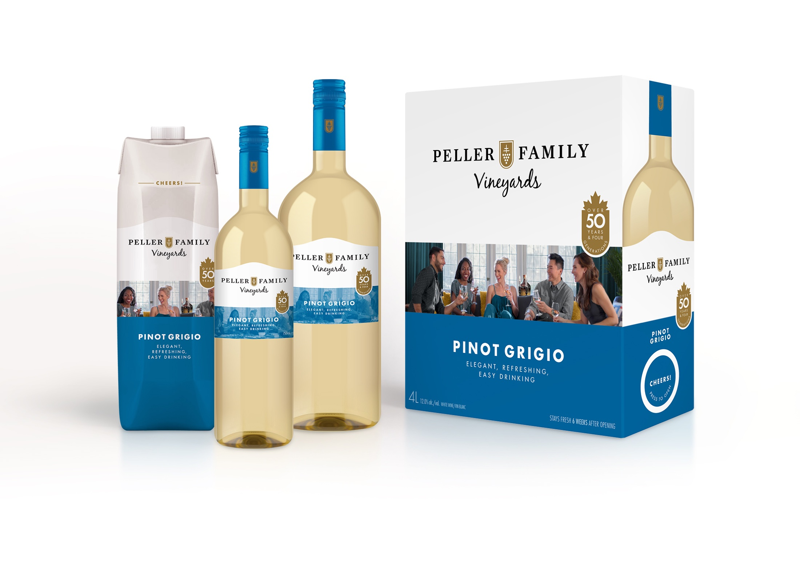
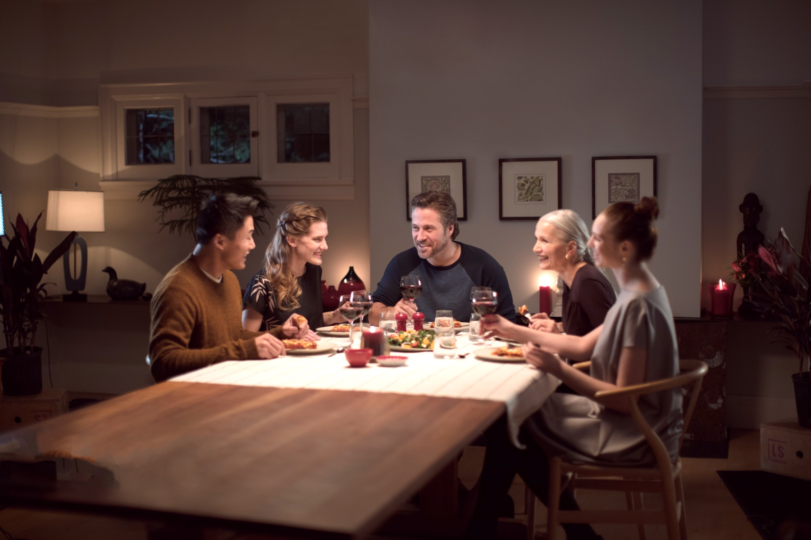
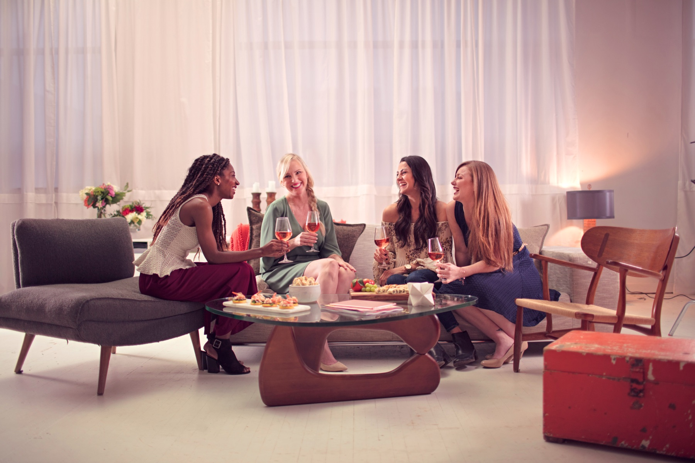
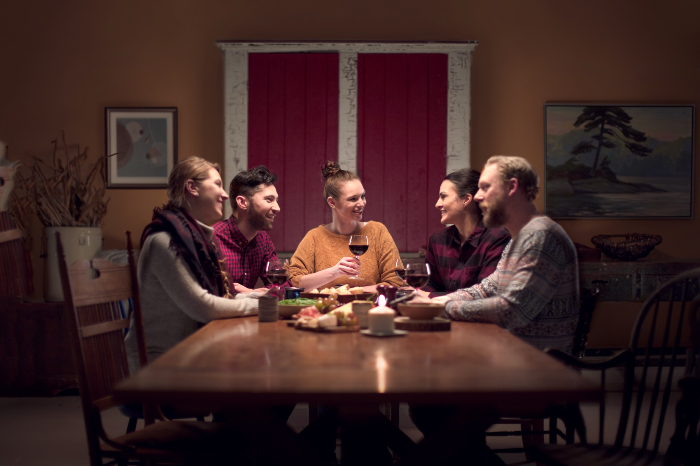
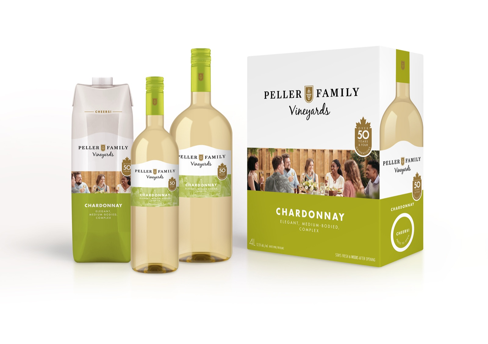
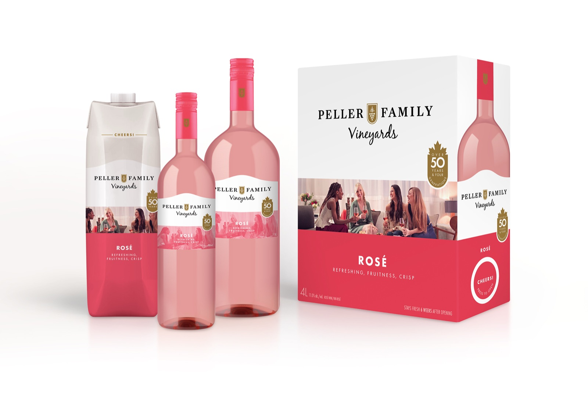

made for the table, not the tasting note.
Canada's volume wine staple needed to feel contemporary, generous and ready for every kind of gathering.

A familiar volume leader whose identity was losing relevance.
Organize the brand around social gathering, not wine expertise.
Research, identity, custom photography and a portfolio system.
More than 150 SKUs across varietals and formats.
a big brand had started to feel small.
Peller Family Vineyards was a staple and one of Canada's highest-volume wine brands. Familiarity was an asset, but the brand no longer reflected how its customers wanted wine to fit into their lives.
The redesign had to modernize the portfolio without abandoning trust, then work across a vast mix of varietals, bottle sizes, cartons and alternative formats.
Approachable, clean and inviting beat expert language and unnecessary ceremony.
More than 150 SKUs needed variation, recognition and production discipline.
put the occasion before the appellation.
the family resemblance.
Every varietal received its own custom photography and personality, while a consistent crest, hierarchy and architecture held the portfolio together across bottle, tetra and box.





Research, strategy, brand identity, packaging architecture, custom photography direction and launch by Smaller Agency.
Client: Andrew Peller Limited / Peller Family Vineyards.